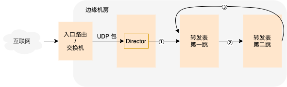

#220112 UDP¶
Unimog 的 UDP 处理策略¶
首先，对于像 DNS 这种简单的 请求响应 式服务，仅均衡负载，不维护状态，转发表每个槽位中只有一跳，完全无状态。
而对于复杂的像 QUIC 这种需要维护连接状态的服务。
在 director 上会有一个 QUIC 协议的 dissector 提取网络包中的 connection id 替代默认的 IP 端口来计算到转发表的哈希。
第二跳逻辑和 TCP 不一样，TCP 有 SYN 包来区分是 新连接 还是 已建立连接（established） 的包，SYN 包直接在第一跳接收，UDP 不行。UDP 只能通过内核接口判断是 新连接 的包还是 已建立连接 的包。所以 UDP 包在正常情况下包都需要过两跳。
UDP 包在转发时，第一跳 / 第二跳分别对应转发表中的第二跳 / 第一跳。转发表没有变更的情况下所有包都是在转发的第二跳（转发表的第一跳）上被接收的。只有某一个槽位有变更的时候，转发表的第一跳变成转发表的第二跳，也就成了转发的第一跳，此时老连接上的包才会在转发的第一跳上被接收。维护了老连接，保证了老连接不会断，相对于 TCP，额外开销不小。
上面第二跳的逻辑要工作，对 UDP Server 有要求，需要 UDP Server 建立 connected udp sockets。
bpf 中使用 bpf_sk_lookup_udp 判断是 新连接 的包还是 已建立连接 的包。
查看其调用链可以发现最后调用的 __udp4_lib_lookup 和 __udp6_lib_lookup 这两个函数。
bpf_sk_lookup_udp
➡️ bpf_sk_lookup
➡️ bpf_skc_lookup
➡️ __bpf_skc_lookup
➡️ sk_lookup
➡️ __udp4_lib_lookup
➡️ __udp6_lib_lookup
什么是 connected udp sockets¶
connected udp sockets 指的是在读写 socket 之前调用 connect 系统调用 “建立” 和对端的连接。
对于客户端来说，使用下面的方式建立的 socket 就是 connected 的，比较好理解。
c = socket.socket(socket.AF_INET, socket.SOCK_DGRAM)
c.connect(('127.0.0.1', 1234))
c.send(b"hello world!")
data = cd.recv(2048)
而我们大部分情况下看到的 udp 服务端的实现基本都是 unconnected 的，比如下面这段代码。
s = socket.socket(socket.AF_INET, socket.SOCK_DGRAM)
s.bind(('127.0.0.1', 1234))
while True:
msg, addr = s.recvfrom(1024)
print(addr, msg)
s.sendto(msg, addr)
我们需要对该服务端做如下改造，才能使上面的第二跳逻辑可以工作。
s = socket.socket(socket.AF_INET, socket.SOCK_DGRAM)
s.setsockopt(socket.SOL_SOCKET, socket.SO_REUSEADDR, 1)
s.bind(('127.0.0.1', 1234))
while True:
msg, addr = s.recvfrom(1024)
print(msg)
c = socket.socket(socket.AF_INET, socket.SOCK_DGRAM)
c.setsockopt(socket.SOL_SOCKET, socket.SO_REUSEADDR, 1)
c.bind(('127.0.0.1', 1234))
c.connect(addr)
c.send(msg)
while True:
msg = c.recv(1024)
print(msg)
c.send(msg)
上面的代码比较糙，只能处理一条连接，通过 ss 命令可以看到这条 established 的连接（ESTAB 那一行），前面 unconnected 的版本只能看到看到 UNCONN 那一行。
# ss -panu|grep python
ESTAB 0 0 127.0.0.1:1234 127.0.0.1:57346 users:(("python",pid=52309,fd=4))
UNCONN 0 0 127.0.0.1:1234 0.0.0.0:* users:(("python",pid=52309,fd=3))
UDP 的 connect 调用并不会实际的去和对端服务器建立连接，所以上面说建立连接的时候都是加引号的，调用 connect 不会和对端有任何的网络包交互，只是告诉内核某一个 socket 的对端是哪，而不需要每次都得调用 recvfrom，sendto 获得 / 传递对端的 IP 和端口。
使用 nc 来模拟 connected udp socket
# 服务端
nc -ul IP PORT
# 客户端
nc -u IP PORT
注意，这里的 IP 不能通配的 0.0.0.0。
nc 中只需处理一条连接，所以不需要再创建新的 socket，直接在原本的 server socket 上 connect 就可以了，详细见：https://github.com/openbsd/src/blob/master/usr.bin/nc/netcat.c#L609
nginx 中 udp 使用的 unconnected socket。
另一种处理策略¶
Unimog 处理策略中，正常情况下，UDP 的包都需要经过 2 跳，额外开销太大，我们可以稍微修改下策略，让大部分的包在第一跳解决，修改如下：
转发的第一跳和第二跳还是和转发表一致，但是增加一个第三跳，第三跳还是转发表中的第一跳，如果第二跳上检查没发现对应的连接，那么是新连接的包，继续转发给第三跳（也就是第一跳）去处理。那么这个连接上后续的包就会在第一跳上直接被处理了。
